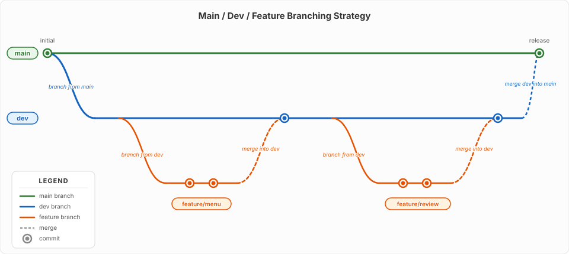

3. Branching Strategy
Branches let you work on new features without risking the stable version of your code. A good branching strategy keeps your project organised and your main code always working.
3.1 What is a Branch?
A branch is a separate line of development. Think of it as a copy of your project where you can experiment, build features, or fix bugs without affecting the main codebase.
When you are happy with your changes, you merge the branch back into the main code.
3.2 Common Branching Strategies
There is no single correct way to organise branches. Different teams and projects use different strategies depending on their size, release cadence, and risk tolerance.
3.2.1 Git Flow
A more structured approach with long-lived branches: main, develop, release, hotfix, and feature branches. Suited to projects with scheduled releases.
3.2.2 Trunk-Based Development
Developers work on short-lived branches (or directly on main/trunk) and merge frequently — sometimes multiple times a day. Popular in continuous deployment environments.
3.2.3 Main / Staging / Dev / Feature
Adds a staging branch to the main/dev/feature model so changes can be tested in a production-like environment before going live. Useful when you need extra confidence before releasing.
3.2.4 Main / Dev / Feature
A simpler model with just three branch types. Easy to learn, effective for small to medium teams, and the strategy we will focus on throughout this site.
3.3 The Main / Dev / Feature Strategy
This simple branching model uses three types of branches:

3.3.1 main
The production branch. This is what is live or ready to deploy. Only tested, working code goes here.
- Never work directly on
main - Always merge into
mainfromdev
3.3.2 dev
The development branch where changes come together before they reach main. All feature branches merge into dev first.
- Your day-to-day integration branch
- Test everything here before merging to
main
3.3.3 feature Branches
Short-lived branches for building one specific thing. Created from dev and merged back into dev when complete.
- Name them after what you are building:
feature/add-login,feature/menu-page - Keep them focused — one feature per branch
- Delete after merging
3.4 Why Use This Strategy?
Benefits
- Main stays stable — broken code never reaches the main branch
- Work in parallel — multiple features can be built at the same time
- Safe to experiment — if a feature does not work out, delete the branch
- Clear history — each feature appears as a separate set of changes
3.5 Working with Branches in VS Code
3.5.1 Creating a Feature Branch
- Click the branch name in the bottom-left corner of VS Code
- Select Create new branch
- Name it
feature/your-feature-name - Start working on your feature
3.5.2 Switching Between Branches
Click the branch name in the bottom-left corner and select the branch you want from the list.
3.5.3 Merging in VS Code
- Switch to the branch you want to merge into (e.g.
dev) - Open the Source Control panel
- Click the ... (more actions) menu
- Select Branch > Merge
- Choose the branch you want to merge from (e.g.
feature/add-login)
Warning
Always switch to the target branch first, then merge the source branch into it. For example: switch to dev, then merge feature/add-login into dev.
3.6 A Typical Workflow
The full cycle from idea to production follows these steps:
1 2 3 4 5 6 7 8 9 10 11 12 13 | |
3.6.1 Why Pull Requests?
A pull request (PR) is a GitHub feature that lets you propose changes and have them reviewed before they are merged. Instead of merging directly in VS Code, a PR lets you:
- Review the diff — see exactly what changed before it lands on
dev - Discuss changes — teammates can leave comments and suggestions
- Run automated checks — CI tools can verify the code builds and tests pass
- Keep a record — every PR documents why a change was made and who approved it
For solo projects, the PR is still valuable as a final checkpoint before merging — a moment to review your own work with fresh eyes.
3.6.2 Merging dev into main
When dev has been tested and is ready to go live, the same PR process is used to merge into main. This keeps main as the single source of truth for what is deployed to production.
Tip
Commit early and often. Small commits are easier to understand and undo than large ones. A good rule: commit after every meaningful change — a new page, a styled section, a working function.
3.7 Summary
main— stable, production-ready code. Do not work on it directly.dev— integration branch where features come togetherfeature/<name>— short-lived branches for one feature each- Create branches from
dev, open a pull request to merge back intodev - Open a pull request to merge
devintomainwhen you are ready to release - All of this is done through the VS Code interface and GitHub